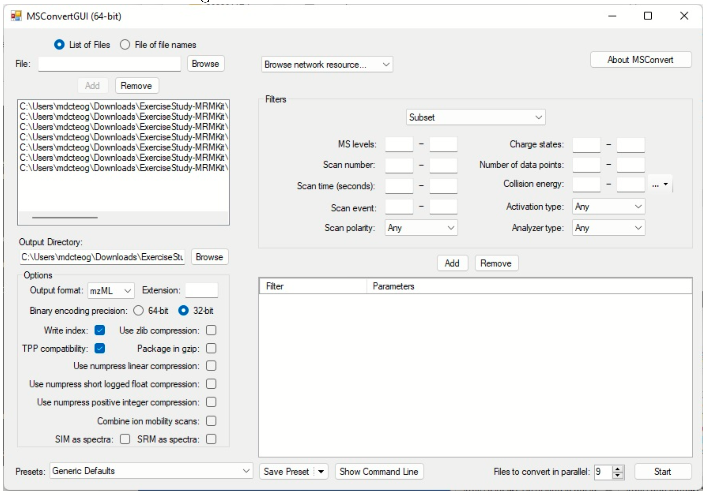

INTEGRATOR uses mzML files as input. Users can use the MSconvert tool, available as part of the Proteowizard software to convert proprietary raw data files (.wiff for SCIEX/Watersm, .raw files for Thermo Fisher, .d folders for Agilent, etc) into mzML format. This step can only be done on Windows PC.
Download or upgrade a recent version ProteoWizard (https://proteowizard.sourceforge.io) on a Windows computer. Having a recent versions ensures successfull conversion of actual vendor-specific formats.
Start “MSConvert” via the START menu, or by right-clicking on the raw files to be converted and selecting MSConvertGUI.
In the MSConvert window, use the “Browse” button to select the raw files to be converted. Note: .wiff and .wiff.scan files need to be located in the same folder).
Set following options: “mzML” for “Output format”, “32-bit” for “Binary encoding precision”, check “Write index” and to improve performance, increase “Files to convert in parallel” to the number of available CPU cores.
Run conversion by clicking “Start”, and copy the mzML files to the MRMhub subfolder mzML
